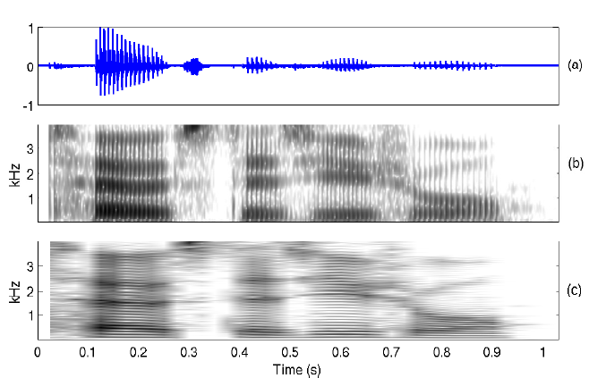

Computer Science & Engineering →Speech Signal Processing Virtual Lab →List Of Experiments
Expt-6: Spectrographic Analysis of Speech
Spectrographic analysis of speech is one of the most widely used techniques for studying the acoustic-phonetic characteristics of different sound units in a language. It is an extension of the short-term spectral analysis, and primarily involves representation of the 3-D spectral information obtained by computing the magnitude spectrum over short overlapped window segments, i.e., 2-D spectral content varying with respect to time. The 3-D spectral information is represented on a 2-D plane with the X-axis representing time, Y-axis representing frequency, and the third dimension denoting the log-magnitude of the sinusoidal frequency components is converted to a proportional intensity of gray value. The resulting representation is referred to as a spectrogram.
Two popular spectrographic representations used for analysis are wideband spectrogram and narrowband spectrogram, depending on the spectral and temporal resolution preserved in the final representation in the frequency domain. In wideband (WB) spectrograms, the spectral information is averaged over frequency windows of bandwidths 100 to 200 Hz. The corresponding time window chosen is 5 to 10 ms, so as to maintain unit time-bandwidth product. An example of a wideband spectrogram computed with a time domain window size of 5 ms and a shift of 2.5 ms is shown in Figure 1(b).
Figure 1: Spectrographic analysis of speech for an utterance "toast as usual". (a) Speech waveform. (b) Wideband spectrogram. (c) Narrowband spectrogram.
Similarly, a narrowband (NB) spectrogram is computed using narrow filter function in the frequency domain, which in turn corresponds to a longer segment length in the time domain. Figure 1(c) shows a typical narrowband spectrogram computed for time domain window size of 50 ms, which correspond to a frequency domain bandwidth of about 20 Hz. Wideband spectrogram provides better temporal resolution, while narrowband spectrogram provides better resolution in the frequency domain. The periodicity in the speech signal due to vibration of the vocal folds is reflected as vertical striations in the WB spectrogram. Horizontal striations in the NB spectrogram are due to the window size being shorter than pitch period, as can be seen from Figs.1(b) and (c), respectively.
The dark bands in the spectrogram represents the resonances of a vocal tract system for the given sound unit. These resonances are also called as formant frequencies which represents the high energy portions in the frequency spectrum of a speech signal. The shape of the dark bands indicates, how the vocal tract shape changes from one sound unit to the other.
1. Identifying the Voiced/Unvoiced/Plosive/Silence regions using spectrogram:
Voiced: In the case of vowels a regular formant structure (3 to 4 formant frequencies) and pitch harmonics (vertical striations in the case of wideband spectrogram) are used for identifying the voiced regions, where as nasals and voiced stops low frequency regions and pitch harmonics are used as clues.
Unvoiced: Energy at high frequency regions and no regular formant structure
Plosive: A silence bar followed by energy at high frequency regions.
Silence: No frequency components (white region)
2. Observing the time varying system and excitation characteristics using spectrogram
So far we described the sound units interms of acoustic phonetics, time varying excitation and time varying system characteristics. Here we demonstrate the time varying excitation and system characteristics (given in Table 1 and Table 2 respectively) using the spectrogram of a speech signal. The speech waveform, its transcription and NB spectrogram are shown in Figure 2. Table 3 presents the spectral details of different sound units using spectrogram.
 |
| Figure 2: Speech waveform and its wideband spectrogram for the utterance âkitAb mEj par haiâ |
| Table 1: Time varying excitation characteristics from spectrogram | ||
| /k/ |
: |
Silence bar before the burst is observed as no frequency components. |
| /i/ | : |
Vocal folds vibration can be observed interms of pitch harmonics (vertical striations) in spectrogram. |
| /t/ | : |
Silence bar before the burst is observed as no frequency components. |
| /A/ | : |
Vocal folds vibration can be observed interms of pitch harmonics (vertical striations) in spectrogram. |
| /b/ | : |
Vocal folds vibration and closure at lips is observed as pitch harmonics at low frequency portion of the spectrogram. |
| /m/ | : |
Vocal folds vibration, closure at lips and opening of velum is observed as pitch harmonics at low frequency portion of the spectrogram. |
| /E/ | : |
Vocal folds vibration can be observed interms of pitch harmonics (vertical striations) in spectrogram. |
| /j/ | : |
Vocal folds vibration and closure at palatal is observed as pitch harmonics at high frequency portion of the spectrogram. |
| /p/ | : |
Silence bar before the burst is observed as no frequency components. |
| /r/ | : |
Vocal folds vibration and narrow opening at alveolar ridge is observed as pitch harmonics at lower formants in spectrogram. |
| /h/ | : |
No pitch harmonics are observed in spectrogram due random nature in time domain. |
| /ai/ | : |
Vocal folds vibration can be observed interms of pitch harmonics (vertical striations) in spectrogram. |
| Table 2: Time varying system characteristics from spectrogram | ||
| /k/ |
: |
Complete closure at velum and release of constriction at velar position are the system characteristics, these are observed in spectrogram as silence bar followed by energy at high frequency components (1700-4000 Hz). |
| /i/ | : |
Tongue hump at front position of the vocal tract system and narrow opening of oral cavity is observed in spectrogram as regular formant structure and the formant frequencies observed to be \(F_1\)=320 Hz,\(F_2\)=1960 Hz and \(F_3\)=2530 Hz. |
| /t/ | : |
Complete closure at dental region and release of constriction at dental position are the system characteristics, these are observed in spectrogram as silence bar followed by energy at high frequency components. But the energy of the high frequency components has lower compared to /k/. |
| /A/ | : |
Tongue hump at central position of the vocal tract system and wide opening of oral cavity is observed in spectrogram as regular formant structure and the formant frequencies observed to be \(F_1\)=640 Hz,\(F_2\)=1400 Hz and \(F_3\)=2610 Hz. |
| /b/ | : |
Closure at lips and radiation from cheeks and jaws is observed in spectrogram as low frequency components (less than 400 Hz). |
| /m/ | : |
Opening of velum and closure at lips are the system characteristics and in spectrogram formant structure is observed, and the energy associated to the formants is observed to be much lower (around 25db less) compared to normal vowels. This formant structure may be due to the influence of its following vowel (/E/). |
| /E/ | : |
Tongue hump at front position of the vocal tract system and moderate opening of oral cavity is observed in spectrogram as regular formant structure and the formant frequencies observed to be \(F_1\)=520 Hz,\(F_2\)=1880 Hz and \(F_3\)=2440 Hz. |
| /j/ | : |
In spectrogram a short discontinuity in formant structure is observed due to silence bar of the sound /j/. High frequency spectrum contains more energy over low frequency components. The influence of /E/ is observed in the spectrum of /j/ in the form of regular formants. |
| /p/ | : |
Closure of lips is the system characteristics, in spectrogram no significant frequency spectrum is observed. |
| /a/ | : |
Tongue hump at central position of the vocal tract system and wide opening of oral cavity is observed in spectrogram as regular formant structure and the formant frequencies observed to be \(F_1\)=680 Hz,\(F_2\)=1320 Hz and \(F_3\)=2280 Hz. |
| /r/ | : |
Narrow opening at alveolar ridge is the system characteristics, in spectrogram only two formants are observed \(F_1\)=520 Hz and \(F_2\)=1400 Hz. Intensity of these formants are less (about 30 db lower than the normal formants intensity). |
| /h/ | : |
Narrow constriction at velum, in spectrogram due to coarticulation a thin traces of first two formants is observed. Some discontinuities are also observed in these two formants. The energy associated to these formants is very less. In general for the sound unit /h/ no significant frequency components are observed. |
| /ai/ | Tongue hump initially observed at central (due to /a/)and later at front position (due to /i/) of the vocal tract, oral cavity is initially wide opened and gradually reaches to narrow opening at the end of the sound unit. In spectrogram regular formant structure is observed. As the sound unit is diphthong, a clear transition of the formant structure of vowel /a/ to vowel /i/ is observed. The formants at the initial region are found to be \(F_1\)=680 Hz, \(F_2\)=1720 Hz and \(F_3\)=2400 Hz, and at the final region \(F_1\)=280 Hz, \(F_2\)=2040 Hz and \(F_3\)=2520 Hz. | |
| Table 3: Spectral details for different sound units | |
| Sound unit | Spectrogram details |
| a | Regular formant structure (730, 1090, 2440), pitch harmonics. |
| A | Regular formant structure (520, 1190, 2390), pitch harmonics. |
| i | Regular formant structure (270, 2290, 3010), pitch harmonics. |
| I |
Regular formant structure (390, 1990, 2550), pitch harmonics. |
| u | Regular formant structure (300, 870, 2240), pitch harmonics. |
| U | Regular formant structure (440, 1020, 2240), pitch harmonics. |
| e | Regular formant structure (530, 1840, 2480), pitch harmonics. |
| E | Regular formant structure (660, 1720, 2410), pitch harmonics. |
| o | Regular formant structure (570, 840, 2410), pitch harmonics. |
| m,n | Concentration of energy in low frequencies and midrange frequencies (nasals) with no prominent peaks, and with pitch harmonics. |
| s,sh | Concentration of high frequency energies. |
| k,ch,T,t,p | Concentration of high frequency energy. |
| g,j,D,d,b | Concentration of low frequency energy. |